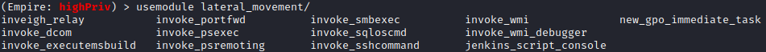

lateral_movement
Lateral movement:
Once we gain valid user credentials, we can use them to log into additional systems until we reach our target
(
Empire
)
> usemodule lateral_movement
/
[TAB][TAB]
#press two times TAB
